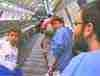
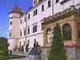

|
Вдох глубокий, пальцы шире -
В предвкушеньи новых трат
Спорили в одной квартире
Мама, папа, я и брат.
Спорили куда б махнуть,
Улизнуть от бытия,
Собираясь отдохнуть,
Мама, папа, брат и я.
Мама всех везёт в столицу,
Брат - в отель, отец - в овраг.
Видишь - облако клубится? -
Лебедь, Щука, я и Рак.
Папа звал туда, где лето.
Мама - где вокруг красиво.
Выбрали: и то и это
И ещё вдобавок - ПИВО.
|
 |
Лето подходило к концу.
- А мы ещё ни в одном глазу, - сказал папа.
- Если мы сейчас не уедем, то потом будет поздно, - драматически предсказала мама.
- Но тогда можно будет ходить на работу, - романтически протянул мой брат Саша - трудоголик несчастный.
Все дружно посмотрели на меня.
- Выбирайте между рыбалкой и лыжами, - промурлыкал я, повиливая хвостом.
- В Варне чудесная рыбалка! - обрадовался папа.
- В Лондоне можно купить чудесный лыжный костюм, - парировала мама.
- Если нужно куда-то ехать, то можно в Копенгаген, - закинул удочку Саша.
- Ну и где там можно ездить на лыжах? - задал я риторический вопрос. - Принц Датский нашёлся!
- Будешь слишком надоедать лыжами - коньки отбросишь, - ответил, зевая, Саша и пошёл
читать книгу.
Отпуск в опасности, - поняли мы все. И тут папа принял соломоново решение.
- Чемоданы собирать, но никуда не собираться.
- Поехал. - Подумали мы про папу.
Но через пару дней папа, сидя за компьютером, прокричал: "Нашёл!", - "Эврика" значит по-нашему. Оказалось, папа нашёл на сайте горящих билетов город нашей мечты. Город храмов и мостов, город летней зелени и осеннего золота, город тишины и музыки, город старины и современности, город, о котором так много говорили большевики. Этот город - Прага.
Шесть ночей - семь дней, гостинница Rhea (3 звёздочки) с завтраком, 399 долларов - приговор окончательный и обжалованию не подлежит.
Эта цена была минимальной для полетов из Израиля в Европу в конце лета. То, что в цену входила неделя проживания в гостиннице с завтраком приводило к подозрению, что гостинница и завтрак либо бесплатны, либо имеют отрицательную стоимость. Но поскольку это не приводило к увеличению наших расходов, мы с этим смирились.
На сборы - неделя. Чемоданы практически собраны.
Осталось - карты, рассказы и советы приятелей, побывавших там, заметки путешествующих интернетчиков (или интернетствующих путешественников), туристические брошюры и описания города и окрестностей, история, путеводители, разработка маршрута и ППР (план производства работ) с учётом прогноза погоды, расписания движения поездов, финансовых возможностей и политических реалий ("торри могут вновь взять верх над вигами").
Через пару дней у папы появилась книжечка из восьми разноцветных листиков в виде отрывного календаря, где на листиках значились даты, дни недели, прогноз погоды, предполагаемый маршрут на данный день, а также альтернативный маршрут на случай изменения погоды, провала основного плана, изменения цен на нефть...
День 1 26.08.2003
Погоня... Какой приключенческий сюжет обходится без неё? Это непреложный закон жанра. Путешествие без погони - это как... Прага без пива.
Фары машины рассекают темноту над дорогой. Рассвет ещё не занялся. Ночная прохлада врывается в раскрытое окно машины и приятно
обволакивает тело. Вдруг вокруг становится светло и местность озаряется мерцающим голубым светом. Двойная звезда, квазары-близнецы взошли над горизонтом спереди и слева, посылая в окружающую Вселенную вспышки голубизны. С природой не поспоришь - пришлось остановиться. Из переднего квазара выходит инопланетянин в форме израильского полицейского и, подойдя к моей машине, на иврите просит показать мои документы.
- Игор,- обращается он ко мне после ознакомления с ними,- ты сколько едешь?
После второго переспроса я понимаю, что речь идет не о времени, а о скорости.
- По крайней мере, не более 90 километров в час,- обманываю я его на целых 5 км/ч.
- А мне с вертолёта передали, что 140.
- Ты мне льстишь,- отвечаю я, успокаиваясь. - У этой колымаги на спидометре таких цифр нету.
- Хаим, Хаим, приём!- слышу я как он вызывает вертолёт. "Хоть бы он не разбился" - думаю я в это время.
- Это был не ты,- сообщает он мне.- Это другую машину засекли. Но она уехала.
- А-а,- отвечаю я.
- А ты куда едешь?
- В аэропорт.
- А куда летишь?
- В Прагу.
- Друг!- Кричит он мне.- Я только что оттуда вернулся! Там так красиво! Там так дёшево! Ты только, когда будешь в Праге, обязательно заедь в Карловы Вары. Это ещё лучше, чем Прага! Ты запомнишь это название?
- Постараюсь не забыть,- заверяю я его.
- Счастливого пути!- жмёт он мне руку через открытое окно.
- Поехали догонять ту машину,- это он уже обращается к своему соквазарнику, и две мигающие полицейские машины исчезают в поисках новых развлечений.
В Прагу можно попасть различными видами транспорта. Не рекомндуется это делать на танках.
- Не разговаривайте на русском языке,- предупреждали меня знакомые, побывавшие там. - Во-первых, вам не ответят; во-вторых, направят не в ту сторону, но далеко; в-третьих, если ни то, ни другое, то хотя-бы обворуют.
Из Пражского аэропорта мы едем на автобусе турагенства, продавшего нам билеты, с израильским гидом.
Гид на иврите объяснял, что лучше всего передвигаться по Праге на "метго" и "тгамвае".
Я его спрашиваю надо ли компостировать недельный проездной
при каждом входе в транспорт или достаточно только при первом.
- Судя по акценту, ты говоришь по-русски?- спрашивает он меня.
- Тогда у тебя не будет проблем с общением. Спросишь у кого-нибудь из местных.
Мы едем автобусом через город. Здравствуй, Прага.
Я так давно мечтал о тебе. Ты выглядишь как обнищавший дворянин в эпоху расцвета буржуазии.
Твой костюм слегка прохудился и помят, но ты его носишь полна достоинства и благородства.
Ещё немного времени, немного терпения и доберутся твои строители до отвалившейся штукатурки
на фасадах твоих домов, разгладят морщины твоих улиц и
восстановится этот бесконечный круг, когда ты станешь богата оттого, что красива и будешь
становиться ещё краше, используя на это своё богатство.
Rhea в переводе с чешского означает мачта.
Для того, чтобы понять это не обязательно смотреть в словарь.
Достаточно посмотреть на одноимённую гостиницу. Она находится в Праге-10, но из её верхнего
окна площадь Вацлава видна, а из нижнего окошка - толко Зборовской немножко.
Мы попросили номера на нижнем этаже, чтобы время пользования лифтом не вычиталось из
времени нашего пребывания в Праге. Получив ключи, мы поднялись на 1 этаж, открыли дверь
и вошли в номер. Вдруг из-за моей спины, ревя всеми двигателями, на бреющем полёте
что-то пронеслось в направлении кровати и плюхнулось на неё, не выпуская шасси.
Это оказался Боба. Он по неопытности принял широкую двуспальную кровать за аэродром.
Его не за что было винить, т.к. коэффициент пропорциональности между мной и Бобой и между
аэродромом и кроватью был одинаков. Прикроватные светильники он, видимо, принял за
посадочные огни. Обойдя комнату и обнаружив в ней шкаф с зеркалом, трюмо, стулья,
столик, сейф, полочки, аэрод... я имел в виду кровать, обследовав туалет (с вытяжкой),
ванную, мы обнаружили ещё одну дверь, толкнув которую, оказались во второй комнате.
А там: свои шкафы - два, стулья - два, диван импортный замшевый - раздвижной, стаканы - два,
библия - одна, люстра чешского(!) хрусталя - одна. И всё сверкает.
Придя в себя после минутного шока - гостиница-то трёхзвёздночная - я подумал, что это провокация.
Но отступать было некуда.
- Ладно,- скомандовал я детям,- мы располагаемся в той комнате, с аэродромом, а вы - в этой, с библией.
Но тут Саша молча достаёт из кармана другие ключи от другого номера и я проваливаюсь в темноту.
После этого меня ещё пару дней посещало желание пойти к администратору гостиницы,
устроить скандал и добиться социальной справедливости, разместившись
с детьми в одном двухкомнатном номере. Но это желание разбивалось о каменную логику слова "уплОчено".
Итак, побросав вещи в номере, мы отправились в свою первую вылазку в город.
Улица шумела листвой, горела гроздьями рябины, щемила сердце стволами берёзок,
взывала к памяти рядами панельных пятиэтажек с детскими площадками во дворах. Улица.
Автобусы с гармошками. Киоск.

- Скажите, у Вас есть проездные на неделю? Ну тогда дайте три булочки с котлетами и бутылку Подебрадской. Тётя улыбается и даёт сдачу. Цифры сходятся. Если эти бумажки - деньги, а не фантики, то сдачу дала правильно. Да ещё объяснила как дойти до станции метро. Эксперимент удался - мы друг друга понимаем. Идём в метро, покупаем проездные на неделю (теперь держись), тут же ныряем вниз по эскалатору, садимся в поезд и едем в Хостивар.
Размер Бобиных глаз можно было сравнить только с размером его же улыбки. Вы себе представляете израильского ребёнка, которому в один день удалось впервые покататься на самолётике, трамвайчике, эскалаторе и теперь вот на поезде метро? Да ещё и дядя анекдот рассказывает: "Позор! Двержице завиране. Приште станица Страшницка. У-у-у!"
Итак, едем в Хостивар. Это просто район Праги, окраина (ну, не идти же в первый день на Карлов мост - осмотреться надо), но с лесом и озером в нём. Ориентируясь по карте, заходим в лес, а там... Буйство зелени, запахов, ветер шелестит в кронах... Кому не понятны наши восторги, напомню - мы в Израиле 13 лет живём.
Вышли к озеру. На этом берегу - пляж, на противоположном - лес. Деревья склоняются над водой, отражаясь в ней. Велосипедист промелькнул между ветвями. И тишина!
- Вот,- подумалось мне,- для чего я летел в Прагу - посидеть у этого озера в лесу.
Вечерело. А уходить не хотелось.
И только чувство долга подняло нас в обратный путь. Номер с аэродромом-то оплачен.
Пока шли по лесу - стемнело. А сумерки-то долгие - север, однако.
Автобус всё не появлялся. Прождав полчаса на остановке, решили идти пешком.
До нашей гостиницы по карте километров шесть. Идём вчетвером по ночному городу. Тишь.
Прохлада. По дорогам растут груши и яблони, как у нас туи и кипарисы.
Уютные одноэтажные домики, деревянные заборы. Сердце щемит узнавание.
Гостиничный бар-кафе сделан в стиле корабельной каюты.
Стены, потолок, столы, стулья - всё деревянное. У барменской стойки - штурвал.
Кэп, три чая с лимоном и пиво, пожалуйста. А теперь - пиццу и снова чай.
Всё, спать. Если это в принципе возможно после стольких впечатлений этого дня.
Балконную дверь с окнами - настежь. Укрыться и дышать, дышать этим воздухом.
Воздухом пражской ночи в конце августа 2003 года.
День 2 27.08.2003
За окном брезжит рассвет. Лёгкая тюлевая занавеска колышется в такт дуновениям ветерка.
Воздух прохладен и свеж.
Если я проснулся до звонка будильника, значит меня сегодня ждут великие дела.
Сегодня по плану - знакомство с городом.
Ну да, и про завтрак не забыть.
- Ну, чего расселись? Вы что, сюда есть приехали?
Никаких тормозов у этих чехов. Какая гостиница, такой и завтрак.
После такого завтрака в самый раз снова в постель, а не по городу носиться. Но труба зовёт!
Нет, с собой брать я не буду. Что я израильтянин какой-то?
Трамвай со счастливым номером 7 причалил к нашей остановке. Бобе пришлось на секундочку стать серьёзным,
так как его счастливая улыбка в дверь не пролезала. Поезд метро доставил нас до станции Mustek.
Налево пойдёшь - на Вацлавскую площадь попадёшь, направо пойдёшь - попадёшь туда же.
Мы, как всегда, пошли налево. Огромная прямоугольная площадь раскинулась перед нами.
В торце её огромное красивое здание музея с фонтаном и памятником Вацлаву.
По периметру - дома в стиле классицизма и деревья, деревья... Мы нырнули в одну из прилегающих к площади улиц.
Дома, обрамлённые скульптурами, витрины магазинов, фонари, скамейки и снова деревья, деревья...
Эта улочка вывела нас к реке. - Влтава,- подумали мы. Подошли ближе, точно - Влтава. Мост,
к которому мы вышли, обрамлялся башенками и по нему ходили трамваи.
По этому факту мы установили, что это не Карлов мост, а по карте - что мост Legii.
Там Боба покормил местных чаек хлебом. Он бросал кусочки хлеба в воду, а чайки хватали их на лету,
устроив шумный хоровод и не давая им упасть, чем вызвали Бобин восторг.
На лесистом противоположном берегу возвышался собор св.Вита, а правее, ниже по течению - знаменитый
Карлов мост, о котором так долго говорили большевики. Про Карлов мост я знал две вещи:
первая, что там есть статуя, к которой надо прикоснуться и загадать желание - обязательно сбудется;
вторая, что пока до этой статуи дойдёшь - что-то обязательно стащат.
Можно теперь себе представить какие именно желания выполняла эта статуя.
Десяток минут ходьбы по набережной и мы под башнями Карлова моста. У входа разбиты цветники
со скульптурами. Я хотел сказать, что цветники разбиты, а целые скульптуры находятся среди
цветников. Ступив на мост, мы попали в особый мир, в спектакль с участием множества людей.
Художники, рисующие портреты людей или делающие на них шаржи. Фотографы, продающие свои
работы: мост туманным утром; улица, фонарь... Музыканты, озвучивающие всё это действо. И,
конечно, туристы, фотографирующиеся возле скульптур, башен, решёток, художников, фотографов,
музыкантов. И здесь же я, снимающий фотографирующих всё это. Нельзя сказать, что мы прошли
Карлов мост - мы прожили его от одного берега до другого, не забыв прикоснуться к статуе,
исполняющей желания, ведь в жизни должна быть мечта...
А за Карловым мостом играется совсем другой спектакль - тихий, уютный, размеренный. Его
название - Кампа. Кампа - это симпатичные жёлтые домики с красными черепичными крышами, это
маленькие кафе и ресторанчики со столиками на улице, это тихий тенистый парк с вековыми
деревьями, это маленькая пристань, от которой отходят маленькие, похожие на игрушечные,
экскурсионные кораблики. Когда попадаешь в Кампу с Карлового моста, кажется, что попал в
сказочный мир, поражающий своей ирреальностью.
Перейдя обратно реку реальности, мы вернулись в наш обычный мир и ошалело брели по вновь людным улицам Праги.
Зашли в бюро по продаже билетов на концерты, которые каждый вечер проходят в Пражских соборах.
Из множества вариантов бросился в глаза репертуар из произведений Альбинони, Вивальди, Баха, Шуберта,
исполнявшийся сегодня вечером в кафедральном соборе Девы Марии.
Билеты оказались достаточно дорогие, но мы решили не отступать. Если идти на концерт в Праге,
то именно на такой. Смирившись с предстоящими расходами, вынимаю кошелёк, уже вынул из кошелька деньги и...
застываю с открытым ртом, так как слышу от продавщицы вот что: если придти на концерт за полчаса до начала, то наверняка можно будет купить билеты подешевле. Моему удивлению не было границ, т.к. я не подозревал, что на земле есть место, где продавец может посоветовать покупателю купить что-нибудь дешевле(!) в другом месте(!)
и уже(!) увидев деньги. Я не знал, что мне делать раньше - поддерживать руками отвисшую челюсть или вложить
деньги обратно в кошелёк. Чтобы не перепутать, решил начать с денег. Спасибо, болгарка с русским именем Катя,
живущая в чешском городе Прага.
Старая ратуша оказалась очень высокой. С её смотровой площадки открылась панорама города -
Староместская площадь, собор Девы Марии над Тыном, красное море черепичных крыш, игрушечные улочки,
игрушечная карета с игрушечными лошадками и игрушечные людишки, ожидающие боя часов.
Дальше была синагога и еврейский квартал. Возле синагоги находится магазин хрусталя, в
котором мы разговорились с продавщицей. Она одесситка, приехала с семьёй из Израиля и живёт в Праге уже год.
Рекомендовала попробовать. Да я бы с удовольствием, только кто же меня возьмёт в хрустальный магазинчик
продавцом?
На этом этапе Саша сказал "Шас спою" и улёгся с Бобой валетом на первой попавшейся скамеечке возле
какого-то административного здания. Да, слабоватая нынче молодёжь. Не тот рывок. А я, захлёбываясь
жаждой впечатлений, ещё обежал пару кварталов, вдыхая этот замечательный город и растворяясь в нём.
Ближе к вечеру мы пришли к собору, в котором хотели послушать музыку (см. выше). Желание попасть
на концерт смешивалось с любопытством за сколько же нам здесь продадут билеты. Я было пытался уговорить
билетёршу продать Бобе билет за полцены, ссылаясь на то, что он ещё ребёнок, но билетёрша была неприступна,
утверждая, что для детей вход бесплатный. Пока же я оценивал нелепость ситуации, она,
воспользовавшись моим замешательством, продала нам троим билеты по минимальной цене и ещё успела рассказать
о концерте, исполнителях, Праге, Чехии и жизни вообще.
Вы слышали, как звучит в храме орган? Тогда зачем я буду это описывать?
Полтора часа мы пребывали на небесах и только за этим уже стоило ехать в Прагу.
А когда мы спустились на землю и вышли из собора на улицу, нас заботливо подхватил тихий прохладный вечер и расстелил перед нами узкие мощёные улочки, зажёг на них фонари, а на небе звёзды, наполнил воздух запахом цветов; эхо стучащих каблучков отражалось от стен домов, а память подсказала, что только вчера я здесь был, и что я здесь живу уже очень давно и всё вокруг мне до боли знакомо.
День 3 28.08.2003
Памятуя о наставлении полицейского с родины, этот день мы решили провести в Карловых Варах.
Трамвай, метро, автобусная станция. К чему организованные экскурсии? Что может быть приятнее,
чем вжиться в окружающую среду и почувствовать жизнь кожей? Ощущение жизни началось со станции метро.
Выйдя на станции Florenc, мы увидели девушку, растерянно стоявшую возле трёх(!) огромных чемоданов.
Это немного не мой типаж. Я обычно тимурю для женщин более солидного возраста, но эти чемоданы...
- Я иду на автобусную станцию. Могу помочь, если Вам нужно туда же,- говорю я девушке, надеясь,
что ей-то нужно в другую сторону.
Наивняк. Куда же ещё нужно человеку с тремя чемоданами?! Или на автостанцию, или туда, куда иду я, причём
второе предпочтительнее. А тут совпало. Хватаю я два чемодана и под впечатлением их веса начинаю прикидывать
расстояние до цели, потом подсознательно начинаю переводить метры в шаги. Девушка - чешка, учится в Лондоне,
приехала домой на каникулы. - В чемоданах разобранный Big Ben,- понял я, применив дедуктивный метод мышления.
В общем, для меня эти 627 шагов были своеобразным тестом английского языка под нагрузкой.
А Римма идёт сзади и хихикает, т.к. она-то знала заранее, кто будет нести эти чемоданы.
Цена автобусного билета показалась нам символической. А билет на Бобу стоил половину символической цены.
(Половина символической цены - это когда, покупая билет, начинаешь задумываться, кто кому, собственно, должен
платить.) Вообще, после посещения концерта, подъёма на ратушу, покупки билетов Боба заявил, что он очень дешёвый
и поэтому: что бы мы делали без него?..
Я не понимаю людей, которые мечтают уехать туда, где пальмы.
Я последние 13 лет мечтал оказаться там, где дубы, грабы и, сами понимаете, берёзы. Допустим, этим исчерпываются
мои познания ботаники, но не в тычинках дело. Лес должен быть такой, как тот, по которому гулял в детстве.
Мы ехали в автобусе, а по сторонам дороги был лес как в детстве. И поля. И деревеньки. И воздух...
| Попадая в Карловы Вары, сразу ощущаешь атмосферу покоя и умиротворённости. Всюду зелено, чисто,
аккуратно, красиво. Красивые здания, красивые газоны, красивые виды. Курортная зона тянется вдоль речушки Тепла,
над которой поднимается пар. Противная на вкус целебная вода проистекает аккурат рядом с теми местами, где
находятся киоски, торгующие фарфоровыми расписными чашечками для питья этой самой воды. Источников двенадцать и
все они с разными свойствами, вкусом, температурой, напором и даже, говорят, от разных болезней.
Но есть и тринадцатый - от всех болезней - Бехеревка. Мы накупили её в качестве сувениров всем нашим
родственникам и друзьям. Получился увесистый пакет (не зря я тренировался на чемоданах).
|
 В конце цивилизованной части, за гостиницей-казино с благозвучным названием Пуп (Рupp), начинается лес. А по эту сторону от Пупа - цветники, пешеходные аллеи, парки, кафушки, гостиницы, санатории, рестораны. Один из ресторанов - "У Швейка". Перед ним сидит сам Швейк и улыбается прохожим - то ли глупо, то ли хитро. Неподалёку от него - ресторан "Чарли" (в смысле Чаплин). Вот к нему-то мы и подошли в надежде подкрепиться.
В конце цивилизованной части, за гостиницей-казино с благозвучным названием Пуп (Рupp), начинается лес. А по эту сторону от Пупа - цветники, пешеходные аллеи, парки, кафушки, гостиницы, санатории, рестораны. Один из ресторанов - "У Швейка". Перед ним сидит сам Швейк и улыбается прохожим - то ли глупо, то ли хитро. Неподалёку от него - ресторан "Чарли" (в смысле Чаплин). Вот к нему-то мы и подошли в надежде подкрепиться.
- О, да у вас не дешево! - сказал я, глядя в меню.
- Дешево - это там, - ответила хозяйка, показывая рукой на соседнее здание.
Не чувствуя подвоха, мы идём в указанном направлении и попадаем... в советскую столовую! Тётя Маша стоит на раздаче и шмякает картофельное пюре на тарелки с надписью "Общепит". Правда, лицо у этой тёти Маши чуточку более доброжелательное, чем у её прототипа из воспоминаний и выбор поболе, и порции повнушительнее, и мух поменьше, зато туалет платный.
- Нашмякайте нам, пожалуйста, четыре вторых и два первых, - с восторгом в голосе попросил я, предвкушая путешествие во времени.
Я, конечно, не дегустатор, но пожрать не дурак. Так вот, в ресторанах вряд ли кормят вкуснее. О стоимости я вообще молчу. А уж о машине времени...
Люблю после столь напряжённого труда поваляться на солнышке и отдохнуть, нежно урча животом. А рядом ещё фонтан журчит, деревья шелестят листвой и травинка щекочет шею.
Мы даже было решили остаться в Карловых Варах ещё на день и снять на ночь квартиру, но сознание того, что придётся всё же при этом оплачивать пустующий двухкомнатный номер (2 экземпляра) в гостинице, решило исход сомнений, и мы тронулись в обратный путь.
День 4 29.08.2003
|
|
И всё меня несёт всё тот же поезд,
Пронзающий и время, и пространство -
Дух мой - скиталец молодой
Бескрайних странствий.
Мой сон истлеет тихо на заре,
Пейзаж степей, река в лучах рассвета,
И гром гремит, и ливень будет. Это
Мой дом. Я здесь, и август на дворе...
Димитер Драгостинов
перевод Маши Хаютиной.
|
Как-то в далёком 90-м году, когда Римма училась на курсах адаптации учителей музыки к работе в тюрьме (израильской школе), преподавательница задала написать сочинение на тему: "Мои впечатления от поездки на поезде." Тогда у аборигенов бытовало мнение, что всем, кто не жил в Израиле, не приходилось прежде пользоваться холодильником, диапроектором, унитазом, поездом... (не утрирую). При этом протяжённость железных дорог Израиля равнялась расстоянию от Тель-Авива до Нагарии, что явно уступает оной в Оттоманской империи в 1913 году. Естественно при этом, что самим израильтянам поезд представлялся диковинным видом транспорта, что и отразилось в теме сочинения. Справедливости ради надо отметить, что эта отрасль в последние годы претерпела бурное развитие и теперь поезда современные, бесшумные, кондиционированные, комфортабельные и... переполненные. Что касается разветвлённости линий, то она до сих пор уступает оттоманской 1913 года.
Я всё это пишу для того, чтобы ты, мой дорогой читатель, ясней мог себе представить мои впечатления от поездки на поезде.
- Фа-фа-фа-фафафа, фа-фафафа, - объясняет динамик на железнодорожном вокзале. Не поверив ему, мы идём к информационному пункту. Выстояв небольшую очередь, подходим к окошку и спрашиваем, с какой платформы отходит поезд на Бенешов. Из-за окна нам объясняют, что этот информ. пункт только для говорящих по-чешски.
- Откуда ж мы могли это знать? - Вслух удивляемся мы.
- Так вот же ж написано! - Вслух показывает нам информационная тётя висящий в окошке листок, мелко исписанный на чешском.
- А-а-а, - понимающе киваем мы, устремляясь на поиски пункта для иностранцев.
Найдя его на другом этаже, радостно задаём всё тот же сакраментальный вопрос: с какой, собственно, платформы отправляется поезд на Бенешов?
Причём вопрос я постарался задать на самом что ни на есть иностранном языке, чтобы соответствовать окошку.
Ответ прозвучал... по-чешски и поэтому не решил моих проблем.
- Вы говорите по-русски? Do you speak English? Parlez-vous francais? Ви розмовляєте по-украïнськи? - Выпендривался я перед сидящей за окошком молоденькой бездарностью, как будто это я работаю в информационном пункте для иностранцев.
- Я вам чешским языком объясняю: платформа пять и десять, - раздражённо говорит она, и мне уже начинает казаться, что я понимаю по-чешски, но всё же переспрашиваю.
- Так пять или десять?
Она в гневе хватает листик бумаги и, испепелив меня взглядом, пишет "15".
- Гениально! Почему она не сделала этого раньше? - Удивлённо думал я, выходя на платформу 15. - Антисемитка, наверное.
На платформе 15 нас уже дожидался поезд со старыми угловатыми вагонами, от которых исходил запах... поезда. Это был, конечно, не комфортабельный современный поезд дальнего следования типа Прага - Париж, а старенький пригородный поезд Прага - Бенешов, который не подают ни на пятую платформу, ни, даже, на десятую. Расстояние в 30 километров он проходит за 45 минут, делая остановки возле каждого столба. Я подумал, что этот поезд ещё помнит эрц-герцога Фердинанда и представил, как тот едет на нём из своего замка Конопиште в Прагу за пивом. Тем не менее, возраст поезда не сказался на его чистоте. В вагоне было убрано и чисто. Мы вчетвером компактно уселись у окна.
Поезд, немного попыхтев, жалуясь на боли в суставах, тронулся, меняя декорации за окном от урбанистических до деревенских и пасторальных. Мерно стучат колёса. За окном проплывают деревни, леса, поля, пруды, дома с черепичными крышами. Воздух, наполненный ароматом уходящего лета, врывается в вагон через раскрытое окно. Я высовываюсь из окна, чтобы напиться этим воздухом, чтобы почувствовать кожей упругость встречного ветра, чтобы увидеть на повороте изогнувшийся состав, "пронзающий и время, и пространство".
Вагон полупустой: на соседней скамейке сидит старушка в косынке с корзиной в руках, напротив неё молодая мамаша с маленькой дочкой, за ними - два мужичка.
От маленькой станции Бенешов, что на юго-востоке от Праги до замка Конопиште, в который мы направляемся, идти ещё 2км по живописной тропинке. Слева - лес, справа - поле, вдоль тропинки растут деревья. Осень уже тронула золотом их листву и она, поблёскивая на солнце, колышется в такт ветерку. Вот мы дошли до огромной стоянки с сувенирными магазинчиками, лотками, закусочными и рестораном под огромной черепичной крышей. Оттуда идёт крутой подъём к замку - аллея, ведущая через парк с вековыми деревьями. Дальше - появляются цветники, скульптуры, скамейки и вот, наконец, сам замок, белокаменный под красной крышей. Вокруг замка, как и положено, ров, а у входа, в огромной бетонной яме, сидит невероятных размеров чёрный медведь и, ни на кого не обращая внимания, жрёт морковку. Внутрь замка можно попасть только с экскурсией. Мы купили экскурсию на чешском языке с целью экономии времени и денег - на английском была позже и дороже. Правда, во время рассказа экскурсовода не всегда было понятно, почему группа смеётся, да и группа смотрела на нас то ли как на ущербных с полным отсутствием чувства юмора, то ли как на шпионов, проникших на оборонный объект. Замок интересен тем, что при средневековой внешности у него оказалась тонкая барочная душа. Эрц-герцог Фердинанд, впоследствии невинно убиенный сербскими террористами в Сараево в 1914 году, отделал внутренние помещения доставшегося ему замка в стиле барокко, отрёкся от власти из-за женщины (вот были времена - из-за женщины!), заполнил залы охотничьими трофеями, невероятной по размаху коллекцией оружия, а также домашней утварью - жил он там.
Территория вокруг замка заслуживает отдельных восторгов. Тенистые аллеи, розарий, скульптуры, цветники, пруд с кувшинками и лилиями и над этим всем - тихое обаяние осенней грусти, словно застывшей в воздухе. Чуть поодаль, посреди леса замерло тихое сказочное озеро, отражая плывущие по небу облака. Я, обойдя весь парк, пошёл в обход озера. Тропинка одной своей стороной прижималась к лесу, а другой - к воде. Небо начало хмуриться и от этого местность стала казаться ещё таинственней. Всё вокруг затихло, как в ожидании чуда, и вот, наконец, тяжёлые капли дождя зашумели в листве и покрыли рябью зеркальную поверхность воды. Белый замок просматривался меж ветвей деревьев, отражаясь в озере, и мы с ним, глядя друг на друга, наслаждались дождём, тишиной и запахом озона. Невдалеке от замка стояла скульптура Януса-двуликого, обратившего один свой лик назад, в прошлое, другой - вперёд, в будущее, и связав этим жизнь в одно бесконечно длящееся мгновенье.
Когда мы дошли обратно до Бенешова уже спустились сумерки. Вечерний поезд вёз нас обратно, к цивилизации. Накрапывал дождик, растекаясь азбукой Морзе по стеклу. Все молчали.
День 5 30.08.2003
Любая уважающая себя река Северного полушария размывает левый берег. Куда бы она ни текла. Это происходит вследствие действия силы Кориолиса, возникающей из-за вращения Земли. Поэтому левый берег всегда круче, чем правый. В Южном полушарии – всё наоборот.
Влтава не является исключением. Левобережье Праги возвышается над всем городом и венчается собором св. Вита, который виден практически с любого места. Чуть южнее – национальный символ Франции – нет, не Мулен Руж – Эйфелева башня. Но не собственной персоной, как вы сами понимаете, а её уменьшенная копия. (Чехи – народ скромный. Это в Америке все европейские достопримечательности копируются в масштабе 2:1. Даже коты там (сам видел) больше своих европейских собратьев и ужасно гордятся этим. А Петршинская башня, хоть и копирует Эйфелеву, но уступает ей в размерах).
Сегодня наша цель – ознакомление с красотами левого берега.
Вообще-то, мы уже разок на нём побывали - когда ехали в автобусе в Карловы Вары. Мы проезжали по району Dejvice. Были очарованы красотой домов и участков. Это даже не домики, а целые усадьбы. Восхищает архитектура домов и дизайн садов. Всё утопает в зелени, но зелень эта ухожена, а дома – как на картинке. Если вам кто-то скажет, что чехи плохо живут – бросьте в него камень и повезите в Dejvice, или наоборот, повезите в Dejvice, а потом бросьте камень. А можно камень вообще не бросать – просто повезите в Dejvice.
 Станция метро Малостранска. Подъём по ступеням, по краям которых торгуют... чем только не торгуют, и мы оказываемся у ворот Пражского Града. У ворот – почётный караул, а со стены открывается захватывающий дух вид на Прагу. Черепичные крыши с мансардами, ветви деревьев, соборы и храмы, Влтава с мостами, флаги посольств, вдалеке – новые районы с современными постройками уходят к горизонту, но до него успевают исчезнуть в дымке.
Станция метро Малостранска. Подъём по ступеням, по краям которых торгуют... чем только не торгуют, и мы оказываемся у ворот Пражского Града. У ворот – почётный караул, а со стены открывается захватывающий дух вид на Прагу. Черепичные крыши с мансардами, ветви деревьев, соборы и храмы, Влтава с мостами, флаги посольств, вдалеке – новые районы с современными постройками уходят к горизонту, но до него успевают исчезнуть в дымке.
За стенами Пражского Града находится Злата Уличка, собор св. Вита, другие красивые места и постройки. Их я описывать не буду, т.к. их подробное описание можно найти в любом путеводителе или справочнике. Скажу лишь, что собор св. Вита, с какой точки ни снимай, не вмещается в окно видоискателя. Величественное сооружение.
 Пражский Град плавно переходит в Чотковы сады. Мы, гуляя, даже не заметили, как там оказались. Парк небольшой, но очень красивый. Лужайки, большие красивые деревья, цветники и Бельведер – летний королевский дворец, украшенный по периметру статуями римских богов. Рядом с дворцом – бронзовая чаша фонтана, названного "поющим" из-за звуков падающей в нём воды. А на выходе из парка мимо нас бодро прогрохотал по рельсам старенький трамвайчик, как из моего детства. Маршрут № 91 – экскурсионный. Единственный вид сухопутного городского транспорта, на который не годятся наши проездные.
Пражский Град плавно переходит в Чотковы сады. Мы, гуляя, даже не заметили, как там оказались. Парк небольшой, но очень красивый. Лужайки, большие красивые деревья, цветники и Бельведер – летний королевский дворец, украшенный по периметру статуями римских богов. Рядом с дворцом – бронзовая чаша фонтана, названного "поющим" из-за звуков падающей в нём воды. А на выходе из парка мимо нас бодро прогрохотал по рельсам старенький трамвайчик, как из моего детства. Маршрут № 91 – экскурсионный. Единственный вид сухопутного городского транспорта, на который не годятся наши проездные.
Погуляв по Градчанам, мы вышли к фуникулёру и, к величайшему Бобиному удовольствию, поехали на нём к Петршинской башне. К тому времени стало хмуриться, посвежело, начал накрапывать дождик. Природа преобразилась. Повеяло грустью. Конец лета. Краски лета и осени смешались. Листья лежат на мокрых тропинках. В воздухе запах давно ушедшего времени...
 299 ступенек решились покорять мы с Бобкой. Римма с Сашей сказали, что видели Прагу с самолёта, поэтому представляют как она выглядит с башни. По-другому выглядит, товарищи. Воодушевлённые восхождением, мы с Бобой решили спускаться в город через Петршинский парк. А Римма с Сашей... правильно, на фуникулёре. Встречу назначили на нижней остановке. И вот тут нам с Бобкой повезло – мы заблудились. Мы брели по спиральным тропинкам парка, забыв о времени, наслаждаясь красотой окружающей природы. Вечерело. В парке стало ещё более таинственно и загадочно. Было тихо. Людей нет. Только ветер шелестит в листве деревьев и капли дождя выводят какой-то нечёткий ритм где-то вверху, в кронах. Сюда надо вернуться.
299 ступенек решились покорять мы с Бобкой. Римма с Сашей сказали, что видели Прагу с самолёта, поэтому представляют как она выглядит с башни. По-другому выглядит, товарищи. Воодушевлённые восхождением, мы с Бобой решили спускаться в город через Петршинский парк. А Римма с Сашей... правильно, на фуникулёре. Встречу назначили на нижней остановке. И вот тут нам с Бобкой повезло – мы заблудились. Мы брели по спиральным тропинкам парка, забыв о времени, наслаждаясь красотой окружающей природы. Вечерело. В парке стало ещё более таинственно и загадочно. Было тихо. Людей нет. Только ветер шелестит в листве деревьев и капли дождя выводят какой-то нечёткий ритм где-то вверху, в кронах. Сюда надо вернуться.
Вечером у нас поход на Кржижиков фонтан. До поездки наши приятели советовали обязательно там побывать. Подумаешь, - удивлялся я, - у нас в Виннице тоже был фонтан с цветомузыкой. Кто не видел – не поймёт. Это не цветомузыка – это театр. На фоне чёрного ночного неба разыгрывается представление из музыки, воды и света. И музыка – специально для нас – русские композиторы: Бородин, Римский-Корсаков, Мусоргский. “Ночь на Лысой горе” помните? Нечеловеческая музыка. Ну, а ночная Прага – это в приложение.
День 6 31.08.2003
Сегодня мы в свободном полёте. Прогулка по Праге без определённой цели. Это-то и интересно.
Волею случая мы оказались у Stavovske divadlo - театра, в котором Моцарт давал премьеру оперы "Дон-Жуан". Рядом с театром находится старейший корпус Карлова университета - Karolinum. Широкие площади, узкие улочки, цветники, фонари, тихо вокруг. Проходим мимо огромной синагоги. Снова аллеи, парки, улицы, фонтаны, дома от барокко до классицизма, набережная Влтавы. Идём по набережной на юг и видим знаменитый "танцующий дом".
Боба с моста кормит чаек - бросает вниз хлебные крошки, а там разыгрывается воздушный бой: чайки, кружась, вырывают друг у друга добычу, ловят её на лету. То, что не поймали - достаётся лебедям, подтянувшимся сюда с противоположного берега.
 | | | | | |
 Так, гуляя, мы забрели в ещё одно очаровательное место - Вышеград. Мощёные улочки вывели нас на вершину крепостной стены. За ней - райский уголок - тихо и пасторально. Под вековыми деревьями одиноко стоят скамеечки, покрытые опавшими листьями. Часовенки, теряющиеся в густой зелени, придают окружающей местности уют и умиротворённость. К собору св. Петра и Павла примыкает старое кладбище, на котором похоронены знаменитости. С крепостной стены открывается вид на Прагу и Влтаву - это всегда красивое зрелище.
Так, гуляя, мы забрели в ещё одно очаровательное место - Вышеград. Мощёные улочки вывели нас на вершину крепостной стены. За ней - райский уголок - тихо и пасторально. Под вековыми деревьями одиноко стоят скамеечки, покрытые опавшими листьями. Часовенки, теряющиеся в густой зелени, придают окружающей местности уют и умиротворённость. К собору св. Петра и Павла примыкает старое кладбище, на котором похоронены знаменитости. С крепостной стены открывается вид на Прагу и Влтаву - это всегда красивое зрелище.
Дальше, дальше... Видеть, слышать, обонять... Стоп! Насчёт обоняния. Что это за запах характерный сковывает ноги? Что это за запах, по которому безошибочно выходишь к его источнику? Что это за знакомый силуэт с придурковатым выражением на лице? Да, да, правильно, вы угадали, это именно то, о чём так долго говорили те, кто хотя бы раз побывал в Праге. Мы наконец-то приблизились к главной цели нашего путешествия - ресторану "У Швейка". Внутри ресторана на стенах висят иллюстрации к одноимённому произведению и обстановка довольно приятная. Вы, конечно, не поверите, но "вепржеве колено" я не стал заказывать. Не смог устоять перед запечённым лососем. Как говорил дядя Вася, ударяя доминошкой по столу: "Рыба!" К рыбе было... ну, в общем, вам по пояс будет.
Уставшие, но довольные мы вышли из ресторана :-)
Вновь решили погулять по Петршинскому парку. Боба, большой любитель животных, не упустил возможности покататься на пони. А потом мы гуляли по тенистым аллеям парка, среди цветников, беседок и водопадов, мимо деревянного костёла св.Михала, под могучими кронами деревьев - чешскими кронами :-)
Потом снова была Прага, вечерняя: улицы, площади, здания, скверы и трамвайчик из детства, бегающий по маршруту 91.
День 7 01.09.2003
 Прага-10 - это один из отдалённых от центра районов Праги, в котором мы останавливались, как вы помните, в гостинице Rhea. Это достаточно новый район, в котором панельные пятиэтажки нашего общего социалистического прошлого чередуются с довольно симпатичными частными домиками. Но общими чертами здесь, как и во всей Праге, являются обилие зелени и чистота. Ничем не приметный скверик здесь занимает площадь большую, нежели городской парк Кармиэля (Израиль), а уж по насыщенности зеленью явно превосходит его. Но это, конечно, несоизмеримые понятия. В скверике, помимо прочего, растут рябина (уже красная) и яблоня (уже спелая). Невдалеке от скверика находится школа. (Сегодня же 1 сентября!)
Прага-10 - это один из отдалённых от центра районов Праги, в котором мы останавливались, как вы помните, в гостинице Rhea. Это достаточно новый район, в котором панельные пятиэтажки нашего общего социалистического прошлого чередуются с довольно симпатичными частными домиками. Но общими чертами здесь, как и во всей Праге, являются обилие зелени и чистота. Ничем не приметный скверик здесь занимает площадь большую, нежели городской парк Кармиэля (Израиль), а уж по насыщенности зеленью явно превосходит его. Но это, конечно, несоизмеримые понятия. В скверике, помимо прочего, растут рябина (уже красная) и яблоня (уже спелая). Невдалеке от скверика находится школа. (Сегодня же 1 сентября!)
Далее наши пути разделились. Мы с Бобцом пошли в Хостивар на озеро, а Римма с Саней - ... по магазинам. О магазинах ничего сообщить не могу - не спрашивал, но озеро было замечательным. И лес вокруг озера - тоже. Там, где кончаются лес и озеро, за мостком, начинается жилой квартал из маленьких домиков, утопающих в зелени. Очень примечательны там названия улиц: Евклидова, Архимедова, Ньютонова, Гауссова и.т.д. Целый академгородок.
На обратном пути мы прошли по лесу и зашли в скромный уютный ресторанчик неподалёку от озера. Внутри ресторан отделан деревом, а на стенах украшения в виде морских снастей. Чувствуешь себя, как на шхуне.
- Кок, что там у нас с форелью?
- О, кэп, сегодня замечательная пструха - специально для Вас.
- Несите две. Мне и этому юнге.
Во дворе пасётся оленёнок, нежарко светит солнышко, нехолодно веет ветерок, несильно хмурятся тучки, не слишком торопится кок, плавно протекает жизнь. А нам сегодня вечером уезжать...
Камера на плече, чемоданы в холле, ключи от рая у администратора. Последняя пробежка по району. Вечер, почти ночь. Прохлада и свежесть. Свет в окнах. Город живёт своей обычной жизнью. Деревья-великаны кивают мне головами в знак прощального приветствия...
До свидания. Мы ещё вернёмся. Обязательно вернёмся...